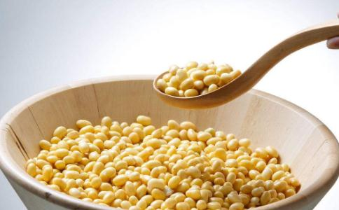

整合东西方意见，我们归纳出以下9种一定要吃的超级
这里所说的9种，同时也包括其它能提供类似营养成分的“同类”。所以，实际可以选择的
黄豆是素食者重要的蛋白质来源，同时也能补充维他命B及提供膳食纤维，它也含有丰富的卵磷脂，在食品加工上，可用来取代乳化剂，做出素食者也能吃的食品。此外，黄豆蛋白及异黄酮素等特殊成分，也被认为有助女性延缓更年期症状、预防乳癌及心血管疾病。
虽然都是豆，但黄豆和其它豆类的营养成分略有不同──例如黄豆蛋白质含量较高，所以常被分开讨论。
2. 豆类 严格来说，红豆、绿豆、
首先是各种浆果，除了抗氧化功效第一名的蓝莓外，其它红葡萄、草莓、
柑橘类的柳橙、
以上各种水果最好能轮流、混合吃，可以发挥最大的抗癌功效。
4. 蔬菜除了维他命、微量元素及丰富的纤维质外，十字花科，特别是绿花椰菜一直被认为有助抗癌，同时也是素食者补充铁质的重要来源。南瓜、红萝卜、地瓜则富含类胡萝卜素。
很多人习惯固定吃某几种菜，结果很可能吃到的都是同类的蔬菜。最好的方法是以绿色蔬菜为基础，再轮流加上白色、黄色或红色的蔬菜，确保你广泛地摄取到各种不同的养分。同时，尽量采取生食的方式，例如
谷类能提供饱足感及热量，而且未精制过的谷类才能保留营养价值。燕麦能降低胆固醇与血糖，各种即食燕麦可增加食用的便利。素食者有时容易饿，不妨准备一些五谷粉及速溶燕麦适时补充能量。
6. 坚果种子、坚果身负传宗接代的使命，凝聚了所有的能量。赵强表示，它们和豆类一样，是素食者良好的蛋白质来源；此外，还含有醣类、膳食纤维及多种维他命，如维他命E、B群，花生尤其是维他命B1、烟碱酸、叶酸的良好来源，杏仁则含有丰富的B2。丰富的微量元素更能补充素食者的需要，包括：镁、铜、锰、硒，而南瓜籽也是锌的良好来源，被认为可治疗摄护腺肥大。
当然，它也很油，但所含的油脂以不饱和脂肪酸为主，尤其是有利于提高血中好胆固醇的单元不饱和脂肪酸，而且不含胆固醇。因为太营养，所以热量也很高。赵强建议，可以购买巿售综合坚果，或是多买几种自己混合，每天抓一小把（以手能握起为原则），或瓷汤匙2匙的份量就够了。
如果你是口味清淡、不油腻的素食者，可能因脂肪摄取不足而觉得饿，不妨在餐点中加点坚果，或当成餐后点心。
7. 菇蕈类东方人比西方人更清楚菇蕈类的好处，它们也经常出现在我们的餐桌上。现在菇蕈类的选择很多，也很流行好几种菇覃组合食用，例如煮成百菇火锅。菇类富含蛋白质、纤维质、胺基酸、维他命B群、胡萝卜素、钾、铁等营养成分，具有低脂肪、低热量等优点。此外，其主要成分多醣体，也有研究发现能提高人体免疫能力，预防癌症，还具有抗疲劳、抗衰老、调节血脂的作用。而且，菇类非常耐煮，营养成分不易被破坏。
8.海洋是微量元素的大本营，而海藻正汇集了这些必要的营养素。以长寿著称的日本人，就十分懂得善用海藻，大约10％的日本饮食含有褐色海藻。
赵强指出，一般人认为DHA是动物性的，但其实是鱼透过摄取微细的藻类而得到的。他也强调，藻类中的多醣体和膳食纤维和陆地食物的组成不同。便秘的人，不妨吃海带，或许会发现奇效。
新的研究也认为，海藻能降低雌激素，降低乳癌风险，不过这项动物实验结果还需更进一步的研究。
9. 茶绿茶富含儿茶素，能降低罹患癌症风险；此外，茶还含有酚类化合物、茶红质、茶黄质等。除了预防癌症，多喝茶也被认为有助减肥、预防血管硬化。
几种食物，导致营养素太单一。依上述建议，其实素食者的餐桌也可以很有变化，而且这些食物不只营养，也十分美味。
素食者常见的营养补充品：如果你很难做到广泛摄取各种食物，或是有大量营养需求──例如怀孕、老年人或儿童，添加营养补充品不失为一个可行的办法。如基本的综合维他命，特殊的像：蓝藻、酵母、健素或雪花片，可以补充维他命B群；亚麻仁籽（油）有丰富的Ω-3、DHA等，可以视个人需要选择。